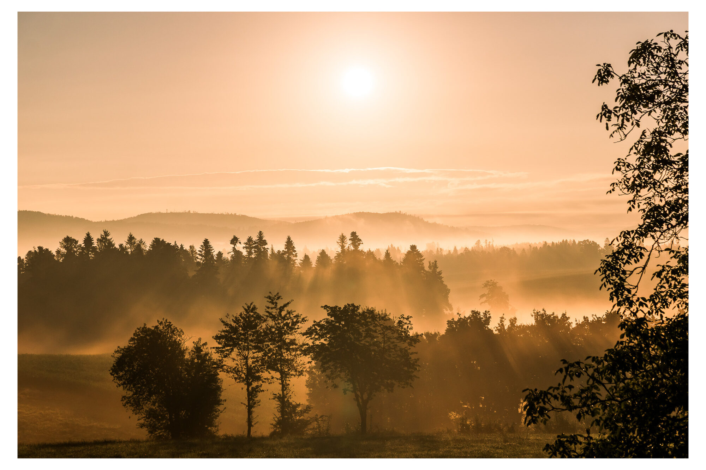
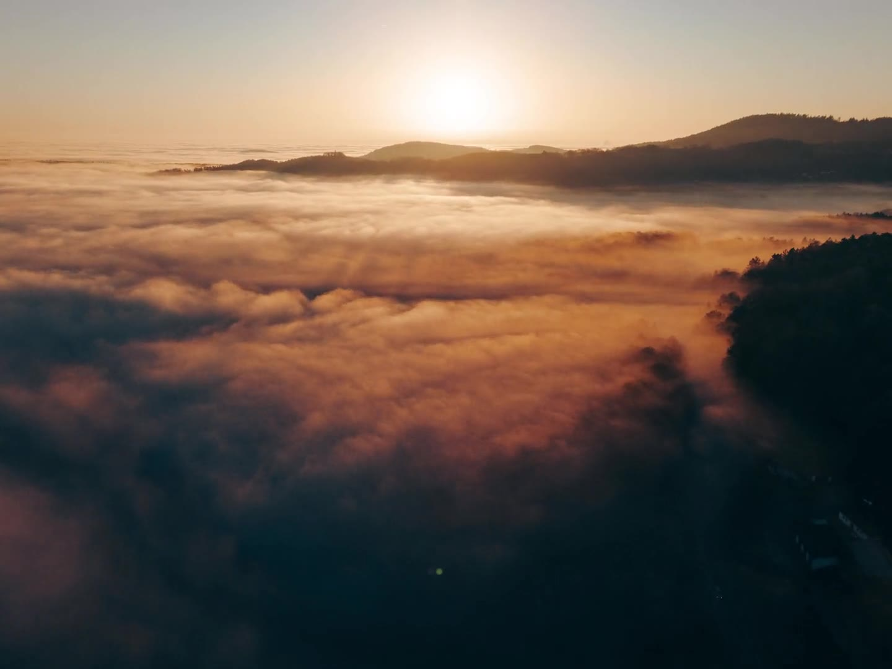
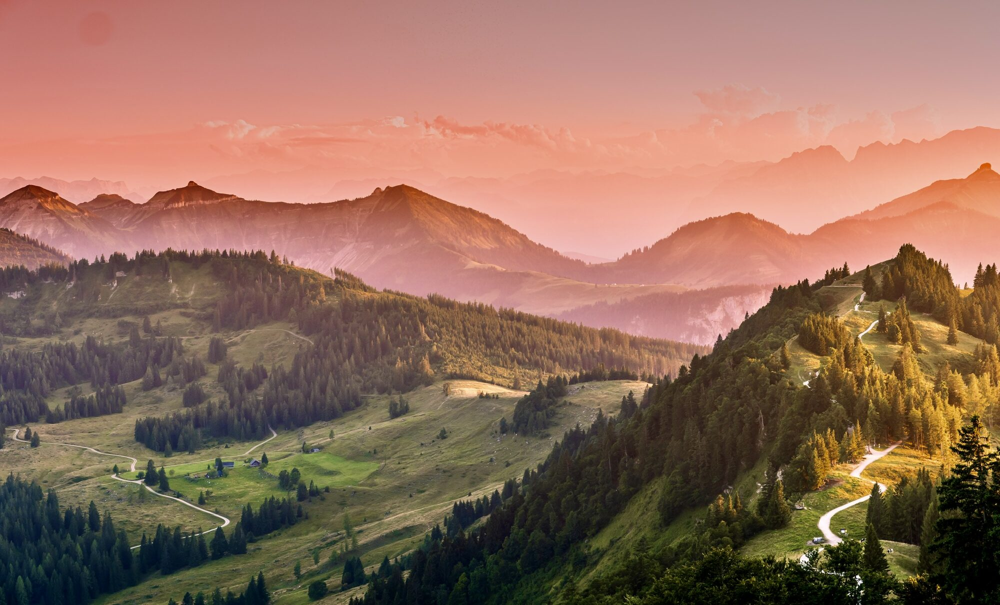
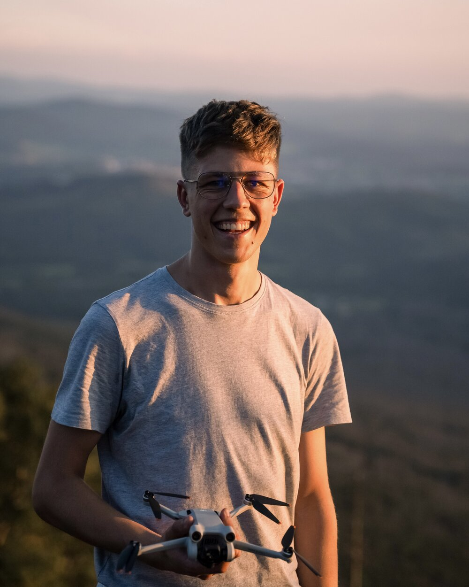
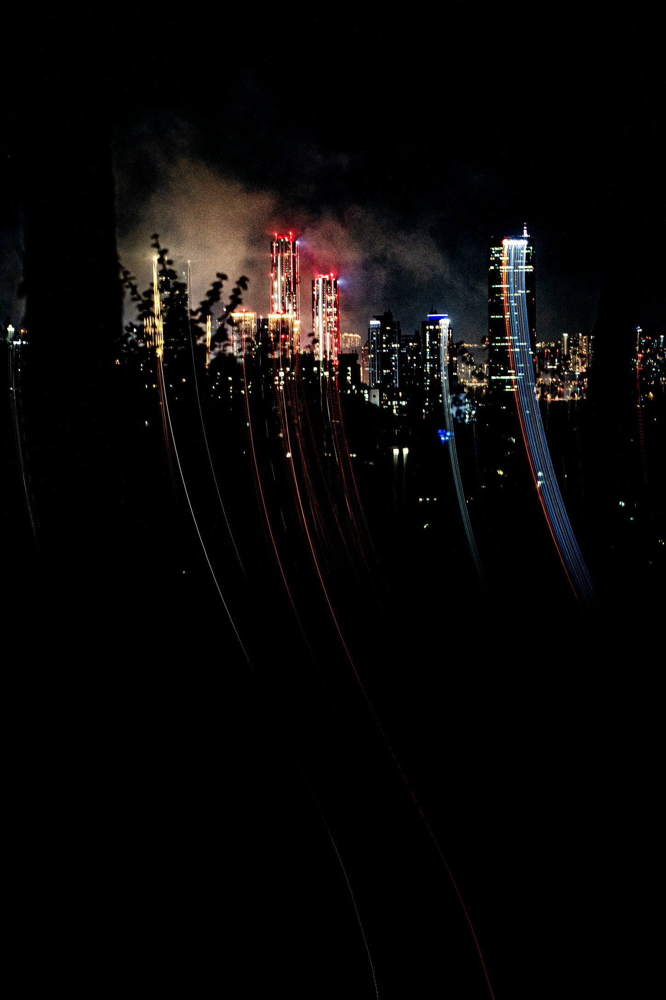

MAX
AULINGER
Fotografie · Drohne · Design · 3D
01
Fotografie
Porträt, Landschaft, Tiere, Architektur & mehr

→
02
Drohne & Video
FPV, cinematisch, Zeitraffer

→
03
Design
Print & Layout mit der Adobe-Suite

→
04
3D
Blender — mein Lieblingsprogramm

→
05
Über mich
Wer ich bin & Kontakt

→
06
Projekte
Einzelne Arbeiten, ausführlich erzählt

→
Struktur-Prototyp · Klick auf einen Bereich